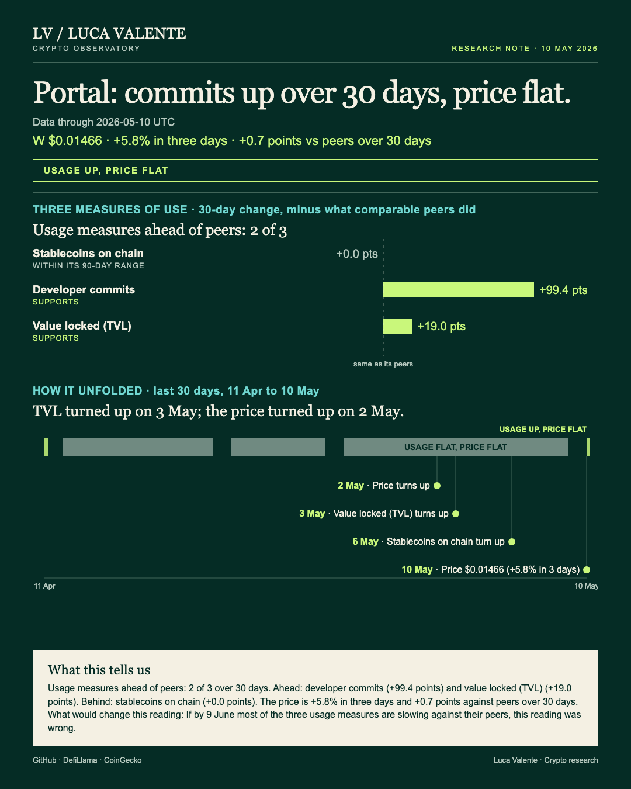
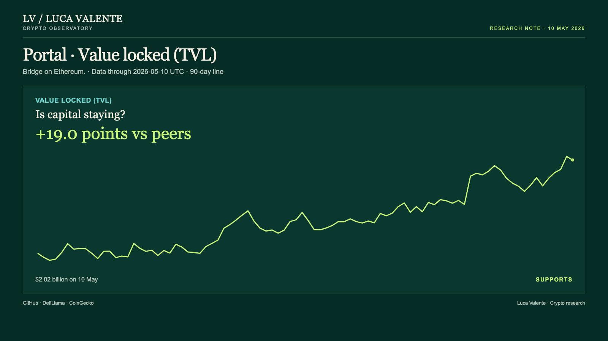

Training note, written on 23 September 2026 from data as of 10 May 2026. Not part of the published series.
The Portal Number That Doesn't Move With The Rest

Portal's biggest number belongs to the chain it runs on, and on 10 May stablecoins on Ethereum sit exactly where its bridge peers sit. That matters: the two measures that did move ahead, commits and value locked, rest on peer groups of very different size.
Printed on the cover: usage up, price flat, beside a token up 5.8% in three days.
Portal is a bridge: it moves tokens between blockchains, tracked here on Ethereum, which is also where its stablecoin count comes from. It sits in a group of 30 bridges, and each number is checked only against the ones that report it, Portal included: seven report commits, fourteen stablecoins, twenty-four value locked, eight a listed price.
Stablecoins on Ethereum stood at $166.31 billion on 10 May. Over 30 days the change is -0.3%, and the median across the 14 entities in the group that report the same figure moved -0.3% too: a gap of +0.0 points.
Weekly commits reached 32 in the week starting 3 May, up 59.4% over 30 days against a group median of -40.0% built from seven entities that report commits: a net of +99.4 points. I read that carefully. A median taken from seven names can move further than one taken from twenty-four; value locked's gain rests on the twenty-four, and that is the one I trust more. Value locked itself reached $2.02 billion on 10 May, up 26.5% over 30 days against a peer median of +7.5%, for a net of +19.0 points.

Timing differed across the four lines. Commits led, five weeks before this data date; the price turned next, on 2 May; value locked followed on 3 May, seven days before the data date; stablecoins turned last, on 6 May, four days before the data date.
W is Wormhole's token, and the price in this note covers all of Wormhole rather than the bridge alone. It sits at $0.01466 on 10 May, up 5.8% in three days and up 10.0% over 30 days, +0.7 points against the +9.3% median of the eight bridges with a listed price.
No fees, no DEX volume, no L2 transaction count and no measure of users or wallets are tracked here for Portal. Commits, stablecoins and value locked are the only three measures in play. Nothing here explains why any line moved, and the numbers stop at 10 May 2026.
Give me until 9 June to be proven wrong on this one. If by 9 June most of the three usage measures are slowing against their peers, this reading was wrong.
Stablecoin is the number I keep coming back to: the largest figure in this piece, and on 10 May it shows no edge at all.
Sources: DefiLlama, CoinGecko, GitHub.
Peer group: 28 bridges tracked by DefiLlama (who they are). 'Net of the group' is the 30-day change minus the group's median.
Not financial advice. This is a research note based on public on-chain data.